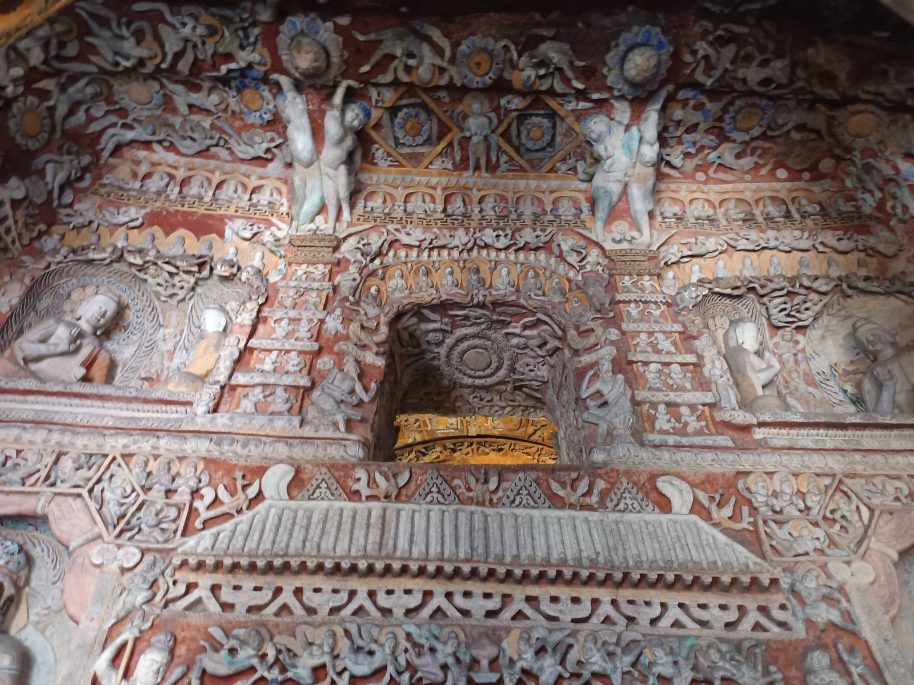
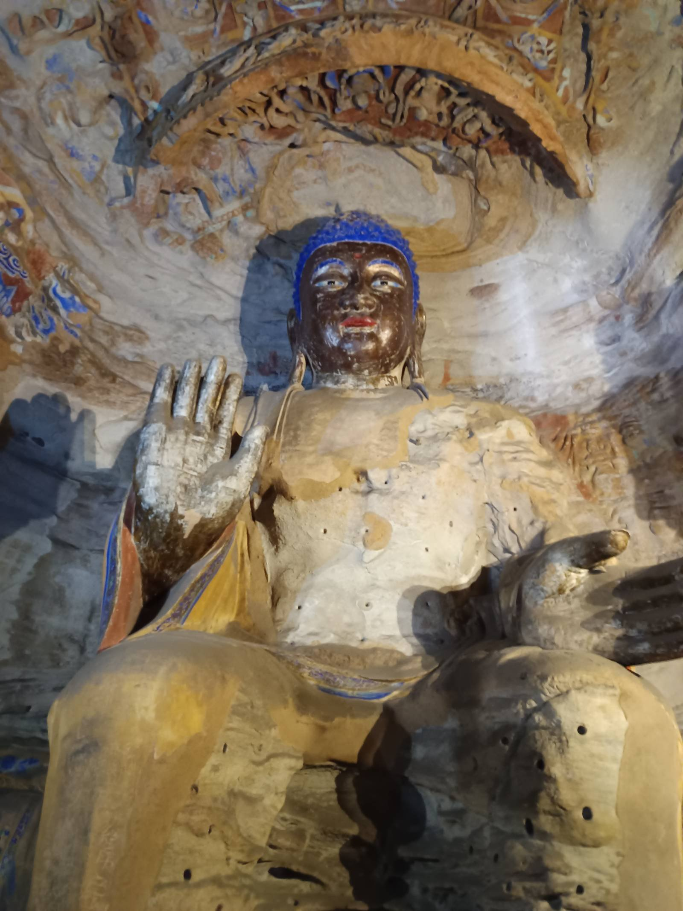
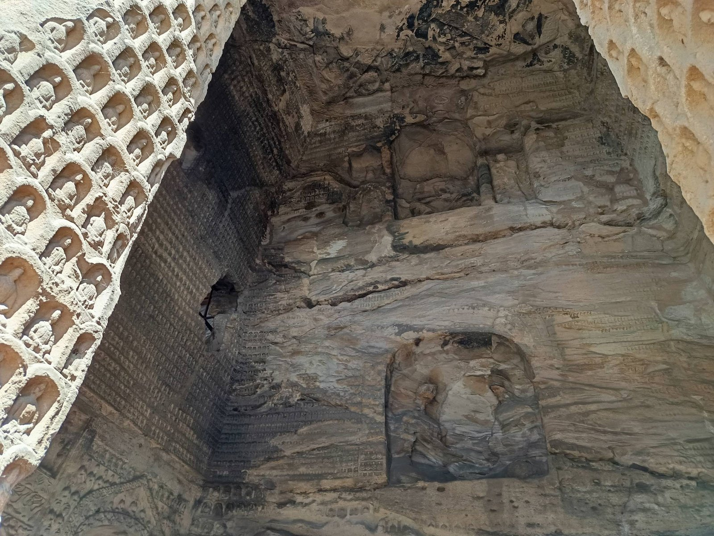
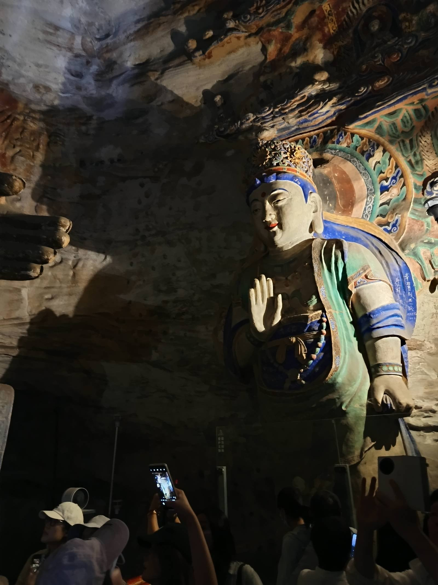

有人问我，为什么一个人来大同。
我说，佛像等了一千五百年，不差我一个人；
而一个不必向任何人解释的下午，我等了很久。
十米的慈悲
第三窟，灵岩寺洞，云冈最大的洞窟。主佛高约十米，趺坐在幽暗深处，右手施无畏印。我仰着头，脖子酸了也没舍得低下来。
一个人旅行的坏处，是没人帮你按快门；好处是——你干脆放弃了拍照，改用眼睛看。十米的慈悲面前，取景框是个笑话。

仰拍到最后，敬畏是脖子发酸·Cave 3
两侧的胁侍菩萨头戴宝冠，身姿微侧，像随时会走下莲座。灯光斜斜掠过砂岩，一千五百年的风把石头摸得温润，佛的衣纹便像水一样，从肩头流到脚边。

主尊与胁侍，一坐千年·Cave 3, wider
崖壁上的蜂巢
走出洞窟，阳光很盛。整面武周山南崖像一座巨大的蜂巢——洞窟层层叠叠，栈道在崖壁上折出细线，人走在上面，小得像一个标点。

把手机举过头顶，蓝天自己会构图·the cliff
身旁是一对对合影的游客。我拍完就走，没人催，也没人等。孤独在这一刻不是形容词，是特权。

洞口盛着整片天空，像一只石头的眼睛·cave & sky
凝固的音乐
最后一面墙前，我站了很久。
伎乐天手持琵琶、横笛、排箫，衣带当风，层层叠叠挤在佛龛四周。北魏的工匠在坚硬的砂岩上，凿出了一场无声的演奏——没有指挥，没有听众，一凿就是几十年。

一千五百年前的旋律，至今没有停·the musicians
凿出来的木构宫殿
如果说第三窟是"十米的慈悲"，那第九窟就是"一整个宫殿"。它是云冈中期五华洞的代表——前室北壁那座塔柱式门楼，是整片崖上最华丽的浮雕之一。
匠人们没用一块木头，却在砂岩上刻出了榫卯、斗拱、飞檐和垂花。往上,是托举莲花的阿育王柱头；往里，是密密层层的小坐佛龛。整面墙不是石壁，是一栋凝固的木结构建筑。
红底上的细密浅浮雕，一步一景·Cave 9 gateway

飞天托莲，衣带当风·Cave 9 doorway
蓝发的阿閦佛
第九窟的主尊是阿閦佛。它不像第三窟那样高大得让人窒息，却有一种更"近"的庄严——蓝发髻，深褐面容，胸口袈裟上还留着一排排小孔。
那些孔，是当年贴金箔留下的钉痕。金箔早没了，只剩下这排孔，像一排省略号，替它讲完没说出口的辉煌。

无畏印与贴金钉孔，风化得刚刚好·Cave 9 Buddha
穹顶与千佛
抬头，是整个后室的穹顶。砂岩穹顶下，四壁密布千佛龛——小到只有手掌大的佛，一排排、一层层，把整面墙铺成一张"千佛棋盘"。
站在窟中央转一圈，你会被这种"重复"震撼：不是重复本身，而是每一个重复里，都有一张不同的脸。

千佛龛铺成棋盘，一张张脸各不同·Cave 9 ceiling
人间烟火里的菩萨
最后一尊，是前室的弥勒菩萨。它披着蓝绿衣袍，胸前璎珞缀满，眉眼低垂——最动人的是：它脚下是一排举着手机拍照的游客。
一千五百年前，人们抬头仰望它；一千五百年后，人们举着屏幕对准它。佛没变，变的只是仰望的方式。这大概就是"人间"——佛在上，人在下，中间隔着一千五百年，和一束打不完的光。

神圣与人间，在同一个画面里·Cave 9 Bodhisattva
塞外的天空
塞外的天气，是真的让人喜欢。
云跑得快，天蓝得干脆。走出洞窟，找一个台阶坐下来，一坐就是半天——云从崖壁这头飘到那头，影子在佛像上慢慢地走。没有人催你起身，没有人问你"看完了没"。
在大同，坐一天都不觉得累。
云从崖壁这头，飘到那头·the frontier sky